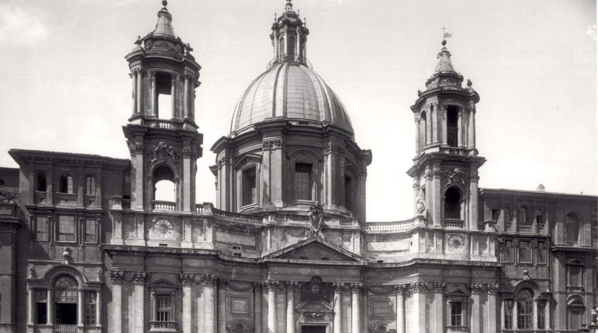

Borromini fue un arquitecto genial que con su lenguaje personal construye el vocabulario del estilo barroco.
bridgemanimages.com
En esta página puedes encontrar información relacionada con el arquitecto italiano Fancesco Borromini. Considerado uno de los grandes maestros del barroco arquitectónico y es, junto a Gianlucca Bernini y Pietro de la Cortana, una de las figuras más relevantes de la arquitectura italiana del siglo XVII.
En esta página encontrarás los siguiente contenidos:
- U Una relación de sus obras más famosas que incluyen fichas para descubrir con mayor profundidad su manera de entender la arquitectura
- Una lista de enlaces que hacen relación a su vida y obra algunos de los cuales han servido para realizar este sitio web.
Esperamos poder transmitirte la pasión que sentimos nosotros al observa la obra de este extraordinario artista. Un arquitecto excepcional que elaboró un lenguaje propio que cambió para siempre la arquitectura occidental.